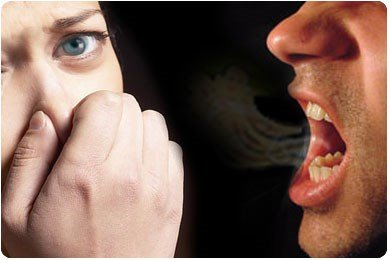

JAGA SENYUM ANDA DENGAN PENGOBATAN INI
Saya dulu menderita bau mulut, dan sudah lama merasa tidak percaya diri dalam berkomunikasi, jadi saya harus mencari berbagai macam perawatan. Untungnya, setelah 5 tahun mencoba, saya menemukan Detocline dan mengonsumsinya terus-menerus. Saya sangat terkejut dengan khasiat obat hebat ini.
Kekecewaan
Saya Dina, 23 tahun. Saya adalah pemandu wisata. Saya memilih pekerjaan ini karena saya adalah penggemar berat traveling dan menemukan hal-hal baru di negeri asing. Sungguh menakjubkan ketika datang ke negeri lain, menghirup napas dalam-dalam di lingkungan yang baru, berbicara dengan orang asing dan kemudian berteman dengan mereka. Saya memilih untuk menjadi pemandu wisata bukan hanya karena ingin berwisata ke banyak tempat, tapi juga karena ingin berbagi pengetahuan tentang tempat-tempat yang biasa saya kunjungi dengan para turis, karena saya percaya tempat-tempat itu akan membuat hidup saya lebih hidup dan memberikan pengalaman yang lebih menarik daripada hanya membaca dari buku, tidak peduli berapa lama saya tinggal di sana.

Ibu saya selalu keberatan dengan pekerjaan saya karena dia ingin saya menjalani kehidupan normal, menjadi gadis yang patuh dalam hidup, memilih pekerjaan yang mudah, mencari seorang pria untuk dan punya anak, dan menikmati langkah sederhana dalam hidup. Saya tidak merasa bahagia dengan kehidupan seperti itu; Oleh karena itu, saya tidak pernah berpikir bahwa ibu saya benar tentang pekerjaan saya saat dia mengatakan bahwa saya telah membuat kesalahan dengan menjadi pemandu wisata.
Saya tidak sering melakukan rutinitas tertentu, tapi sering mengubahnya karena tempat baru seringkali memberi saya lebih banyak inspirasi. Suatu ketika, saya membawa turis ke Danau Toba. Mengapung di atas kapal di danau, beberapa wisatawan mengeluh bahwa ada bau tidak enak di perahu.
Saya tidak tahu bau apa itu saat itu hingga tur selesai, seorang turis datang dan berkata kepada saya: "Saya harap Anda tidak akan marah kepada saya tapi ada masalah dengan nafas Anda. Saat Anda berbicara semua orang harus menahan napas dan tidak mau mendengarkan."
Saya kaget. Tidak ada yang memberitahu tentang masalah itu dan saya tidak pernah merasa nafas saya baunya sangat tidak enak.
Setelah mengetahui ini, saya merasa kurang percaya diri untuk berkomunikasi karena saya takut orang tidak nyaman dengan napas saya Setelah itu saya jarang mengambil job sebagai pemandu wisata dan bahkan selama tur, saya menjadi kurang ramah kepada para wisatawan dan sering menutup diri untuk menjelaskan tentang tempat-tempat wisata.
Sebelum itu, saya sering berbicara kepada semua wisatawan dan berteman dengan mereka. Akhirnya setelah lulus kuliah, saya berhenti bekerja meski saya masih suka banyak bepergian, tapi rasa minder saya masih membuat saya ragu berdiri di depan orang, berbicara dengan mereka.
Saya melamar pekerjaan di agen tiket untuk turis. Itu adalah pekerjaan yang membosankan, tapi saya tidak perlu banyak bicara jadi orang tidak akan tahu bahwa napas saya berbau busuk.
Satu hal yang selalu ada di tas saya adalah permen karet. Saat berbicara dengan orang lain, saya mengunyah permen karet dan menganggapnya sebagai harta karun saya. Namun, banyak orang berpikir bahwa saya tidak menghormati mereka, terutama kepada orang yang lebih tua.
Saya tidak berani berbagi beban ini dengan siapapun karena saya malu. Meski saya sangat memperhatikan perawatan gigi dan menggunakan natri clorid setiap hari, saya tidak bisa mengobati bau mulut saya.
Saya melihat di surat kabar bahwa para ahli menasihati orang-orang dengan masalah bau mulut untuk tidak makan makanan amis. Saya mengikuti dan bahkan tidak makan daging selama berbulan-bulan; tapi napas saya tidak membaik.
Saya masih merasa sangat gundah dengan diri saya sendiri sehingga saya berhenti bekerja di kantor pariwisata dan mengatakan pada ibu bahwa saya sedang mencari pekerjaan lain padahal saya tinggal di rumah, menghindari komunikasi dengan siapa pun.
Obat penyelamat yang berharga
Setelah saya berhenti bekerja selama 2 bulan, ayah saya pulang ke rumah. Kehidupan ayah saya penuh dengan petualangan dan jalan-jalan sehingga dia hampir tidak pernah tinggal di rumah selama sebulan penuh. Ayah saya tahu betapa saya suka bepergian dan menemukan hal-hal baru, jadi dia percaya bahwa pasti ada alasan bagi saya untuk tinggal di rumah.
Saya menangis tersedu-sedu karena rasa malu. Dia tertawa dan mengatakan bahwa saya bodoh. Dia mengatakan kepada saya bahwa jika saya memberitahunya masalah ini sebelumnya, sudah lama masalah ini bisa dipecahkan.
Saya tidak tahu bagaimana ayah saya akan membantu saya sampai keesokan harinya ketika dia memberi saya sebuah paket kecil obat dan menyuruh saya minum obat ini untuk mengobati bau mulut.
saya tidak tahu apakah bau mulut saya bisa hilang, tapi saat saya berbicara dengan orang lain, saya tidak melihat ada reaksi tidak nyaman dari mereka. Sepertinya obat unik ayah saya benar-benar manjur.
Ayah bilang obat itu bisa menyembuhkan bau mulut saya. Ayah tahu bahwa bau mulut disebabkan oleh parasit. Menyikat gigi, menggunakan cairan pembersih atau mengunyah permen karet hanyalah perawatan sementara yang tidak pernah menyembuhkan masalah itu. Ketika saya menggunakan obat ini, semua parasit di tubuh saya akan terbunuh dan saya bisa melepaskan diri dari penyakit bau mulut ini.
Ayah mengatakan bahwa ia belajar menyembuhkan bau mulut dari seorang teman dari Jepang yang dulu pernah bekerja dengannya. Cairan pembersih yang saya pakai sehari-hari hanya bisa mengeringkan mulut tapi tidak pernah menyembuhkan bau busuk napas saya.
Dia menambahkan bahwa jika saya terus menggunakan obat hebat ini Bukan saja bau mulut saya yang lenyap, tapi tubuh saya juga akan menjadi sehat dengan sistem kekebalan tubuh yang kuat.
Tempat baru selalu membawa informasi yang menarik dan berguna bagi saya. Ayah saya membantu mengembalikan semangat saya berkat obat hebat ini. Saya tahu banyak orang memiliki masalah yang sama dengan saya dan saya percaya bahwa mereka mungkin minder dalam komunikasi dan juga dalam kehidupan. Oleh karena itu, saya ingin berbagi obat hebat ini dengan semua orang dan berharap mereka bisa mengatasi masalah ini, seperti yang saya lakukan. Obat yang hebat ini adalah Detocline.
Jika Anda ingin menghilangkan bau mulut dan memiliki tubuh yang sehat seperti saya, Anda harus mencari lebih banyak informasi dan memesan Detocline untuk Anda sendiri:
Saya melihat ada banyak barang palsu di Internet, hati-hati! Hanya ada satu agen eksklusif Detocline.
Kunjungi link berikut:

Linda 16.03.2020
Hi Dina, aku menderita bau mulut sejak lama. Aku bisa merasakan bau busuk keluar dari tenggorokanku. Banyak metode telah digunakan, namun tidak ada satupun yang berhasil. Bisa tolong beritahu aku apakah parasit adalah salah satu penyebab bau mulut?
Dina 16.03.2020
Ada berbagai penyebab bau mulut, tapi yang utama adalah parasit. Parasit bisa masuk ke tubuh manusia melalui air dan makanan. Makan makanan tidak sehat dan tangan kotor semuanya merupakan penyebab parasit di tubuh, mengakibatkan bau mulut. Saat ini, makanan kotor ada dimana-mana, dan inilah satu-satunya cara untuk membantu tubuh menjauh dari parasit dan bau mulut.
Hilda 16.03.2020
Dina, bisakah obat ini dikonsumsi oleh anak-anak? Karena anak-anak paling sering mendapat masalah ini.
Dina 16.03.2020
Detocline aman untuk anak-anak. Obat ini adalah kombinasi dari bahan-bahan herbal, jadi 100% alami. Teman saya memberikannya kepada anak-anaknya dan berhasil, tanpa efek samping apapun :)
Winda 16.03.2020
Produk ini benar-benar menyelamatkan saya. Saya mengalami bau mulut selama 7 tahun sekarang, tapi setelah 3 minggu menggunakan Detocline, Saya mengatasi rasa malu dan tidak minder lagi dalam berkomunikasi!
Yuda 16.03.2020
Saya ingin menambahkan bahwa produk ini tidak hanya menyembuhkan bau mulut, tapi juga melindungi tubuh terhadap penyakit dan memperbaiki sistem kekebalan tubuh.
Risa 16.03.2020
Saya minum Detocline untuk mengobati bau mulut. Tapi yang paling penting adalah alergi kronis saya sudah sembuh.
Fadli 16.03.2020
Saya orang yang memperhatikan gizi dan kesehatan. Saya selalu menjaga diet dan kesehatan saya. Saya selalu menyikat gigi, menggunakan cairan pembersih dan mengunyah permen karet, tapi saya tetap terkena bau mulut. Saya tahu bahwa saya kena parasit. Mereka menyebabkan bau mulut dan tentu saja mempengaruhi kesehatan dan kulit saya juga. Inilah satu-satunya produk yang bisa membantu saya menyingkirkan masalah ini dan membuat saya lebih sehat. (Saya telah menghilangkan bau mulut selama 7 tahun)
Nandang 17.03.2020
Terima kasih Dina telah berbagi informasi yang bermanfaat ini. Aku putus asa dengan masalah ini. Meski aku sudah coba banyak cara sebelumnya, masalahnya masih ada, dan membuatku merasa malu saat berkomunikasi dengan orang lain. Aku tidak berani mencintai siapapun. Baru setelah membaca blog ini aku tahu tentang penyebab utamanya dan menemukan cara untuk mengobatinya dengan sukses. Sekarang aku bisa berkomunikasi dengan percaya diri dengan siapapun, dari mana saja. Terima kasih banyak. Ngomong-ngomong, aku sudah punya pacar sekarang.
Dina 17.03.2020
Saya benar-benar mengerti kesengsaraan orang yang menderita bau mulut jadi saya memutuskan untuk berbagi metode ini dengan semua orang. Saya selalu berharap bahwa Anda akan memiliki senyum yang indah dan tubuh yang sehat.
Rina 17.03.2020
Adikku menderita bau mulut parah. Setelah menjalani pemeriksaan perut, tenggorokan dan gigi, kami tidak menemukan masalah apa-apa. Dia menggunakan cairan pembersih dan berbagai jenis penyemprot tapi tidak ada hasilnya. Kami melakukan pemeriksaan lagi dan hasilnya menunjukkan bahwa ada parasit di lidahnya. Setelah minum Detocline bau mulutnya hilang, hasil yang memuaskan
Reza 18.03.2020
Ya memang benar. Tersiksa sekali saat berbicara dengan orang yang bau mulut. Mereka harus mengonsumsi Detocline untuk membunuh parasit dan menghilangkan bau mulut sepenuhnya.
Fajar 18.03.2020
Ya Tuhan! Sayang sekali saya sangat terlambat membaca artikel ini. Terkadang, mulut saya sangat bau dan merasa gugup saat berbicara dengan kekasih saya. Jika Detocline Memang ampuh, saya akan mencobanya.
Hani 18.03.2020
Baik suami saya dan saya mengalami bau mulut. Tapi setelah minum Detocline masalahnya hilang. Terima kasih Dina telah berbagi infonya.
Mirna 18.03.2020
Saya sebelumnya tidak memiliki bau mulut, tapi setelah hamil, napas saya terasa sangat ga nyaman. Jadi saya memutuskan untuk membeli Detocline untuk menyembuhkan bau mulut. Hasilnya sangat menakjubkan!